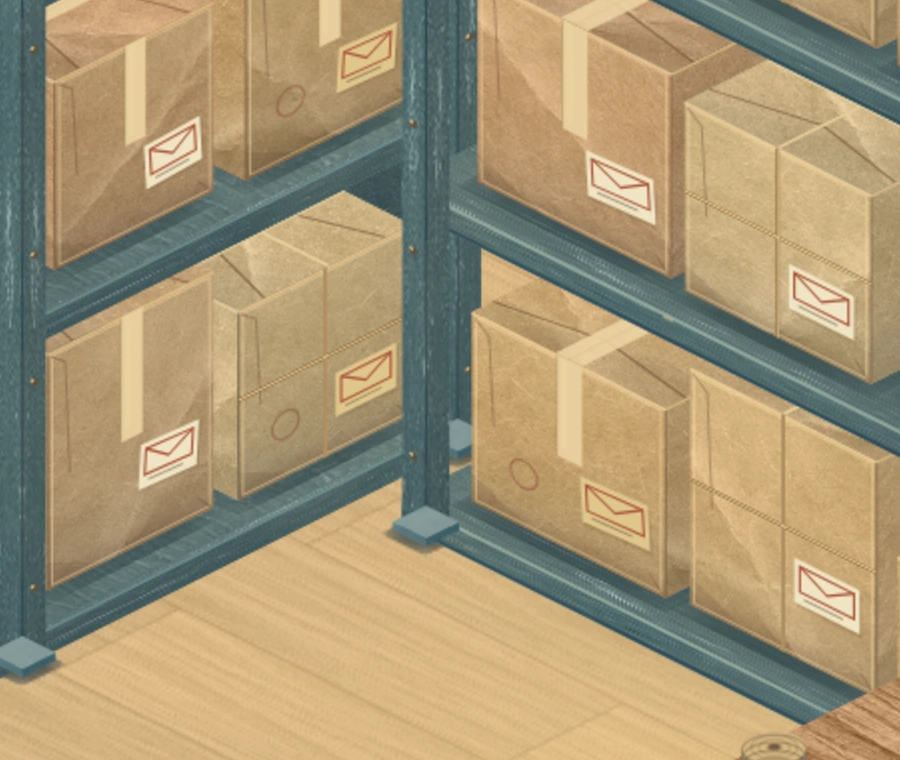
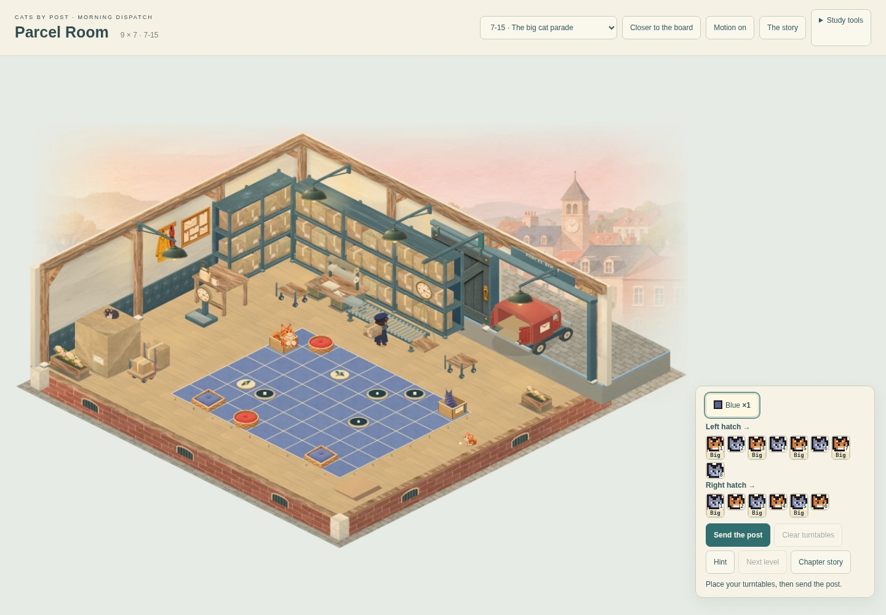
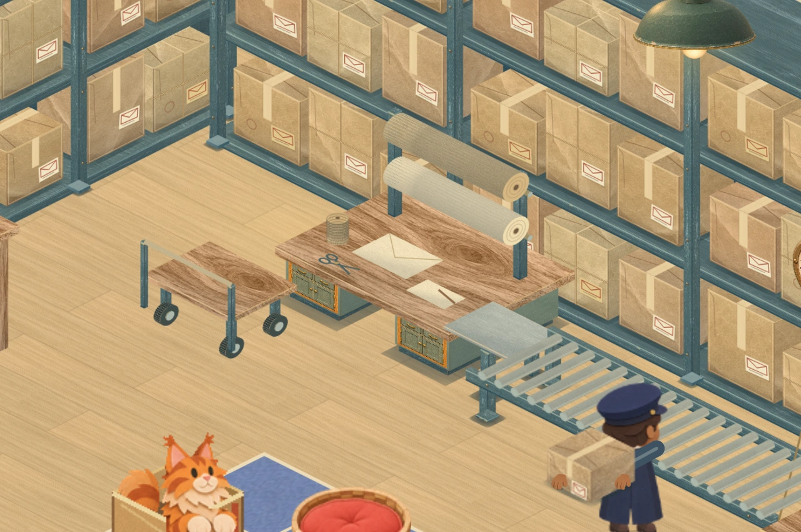
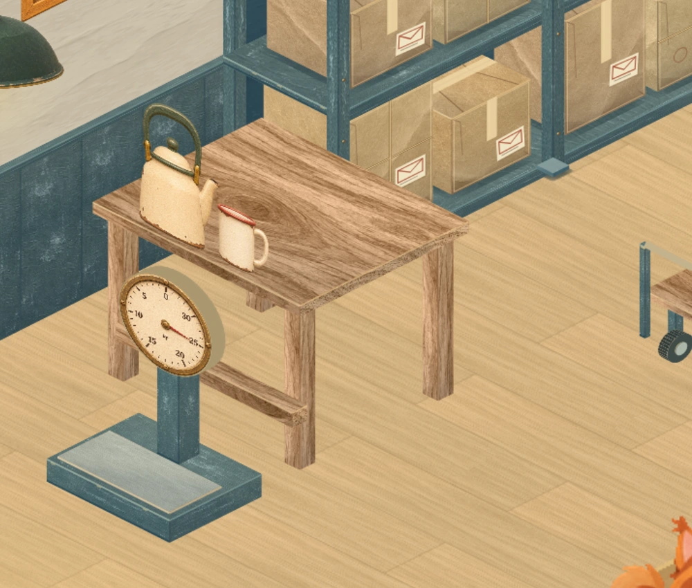
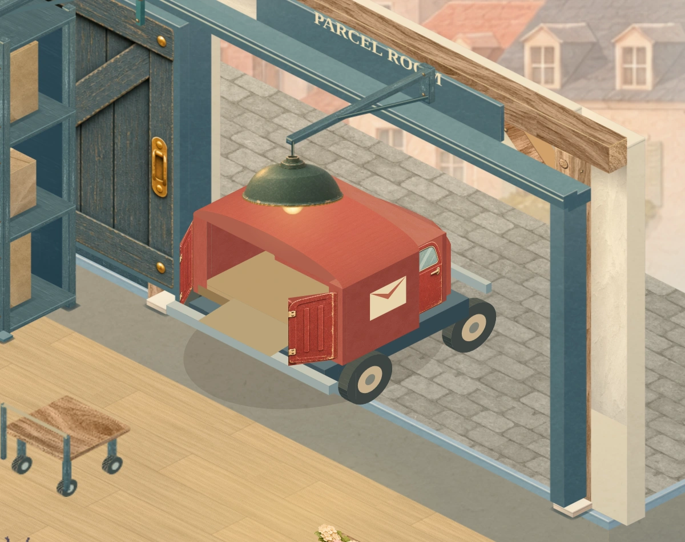
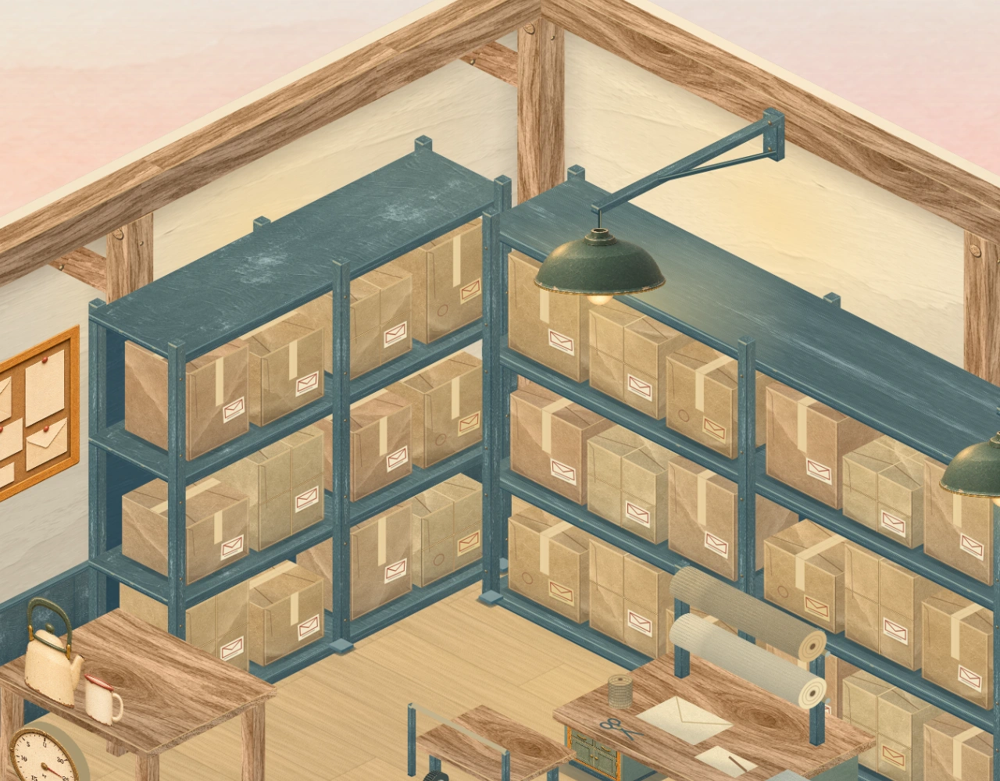
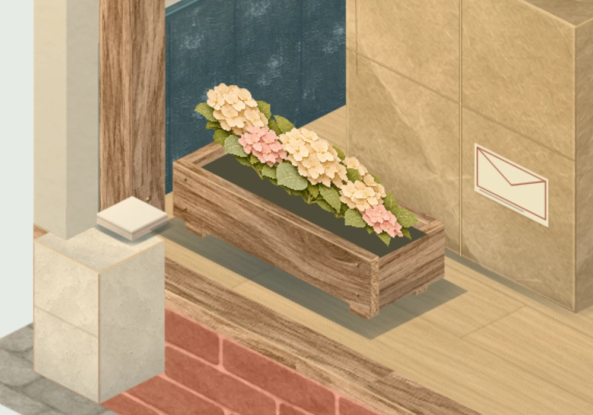
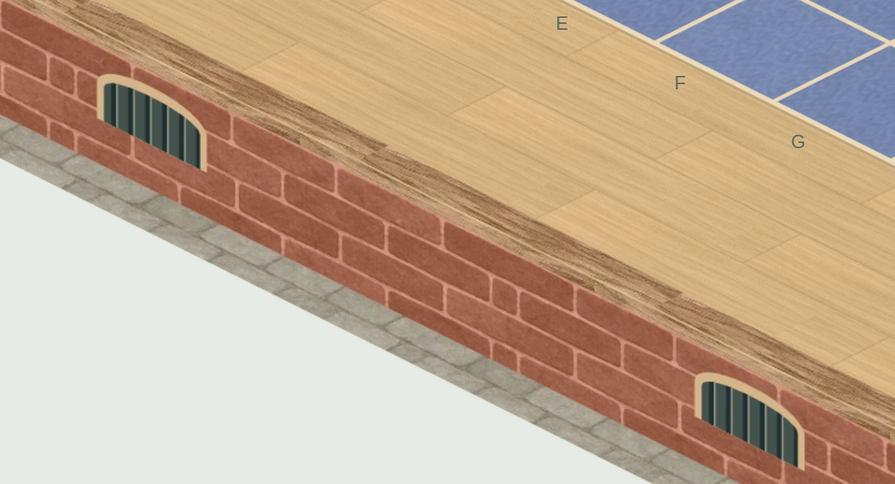
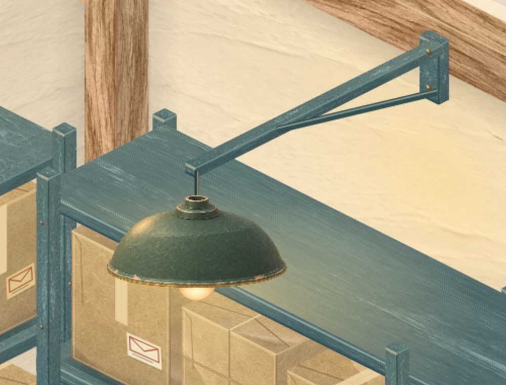
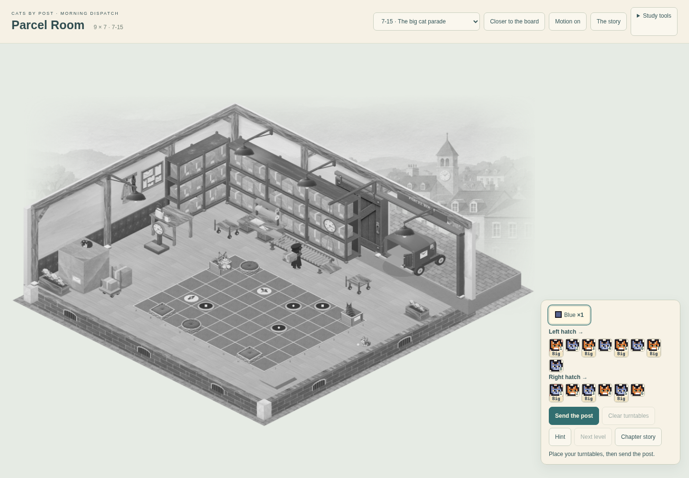

CATS BY POST · MORNING DISPATCH · STEP 3A working room with a material finish
The shelf overlap is corrected. Timber, paper, steel and warm lamps now extend across the room, with a wrapping station, brick foundation, cobbled yard and town beyond. These are captures from the playable study.
Next environment stage: City Hall’s service court. The wider setting remains unfinished; the new composition study explains the proposed connected scenery.
The shelf foot
The rear foot was painted over the nearer rack and its parcel. The assembly now draws in depth order; its actual base remains on the floor.

Corrected · nearer shelf and parcel hide the rear foot.
The whole room · maximum board

9 × 7 · all fourteen cats and both queues remain canonical.
Compare the earlier corner-only checkpoint
 Previous published corner sample · same 9 × 7 board.
Previous published corner sample · same 9 × 7 board.Wrapping, weighing and loading
The wrapping bench has two floor-bearing drawer pedestals, recessed plinths and contact shadows. Its transfer plate joins the rollers at the same working height. The original parcel and hand contacts remain unchanged.

Supported wrapping bench, paper rolls, tools, transfer plate and conveyor.

The floor scale is upright and supported.

The van fits the opening; the foreground pendant stays in front of it.
Materials and setting

Grained timber, folded kraft, painted steel and warm plaster.

Flowers meet the soil in a trough built on the room’s floor plane.

Brick foundation, stone corners, vents and cobbled apron.

Enamel hood and warm bulb meet a real cord and mounted bracket.
Every board size
Working postal life
Step through samples from the unchanged ambient clock, or use the playable study to watch the full movement.
 Actual runtime poses, without moving the worker or parcel to improve the picture.
Actual runtime poses, without moving the worker or parcel to improve the picture.
Chapter and phone checks
Open chapter, growth and responsive captures
Readability without colour

The grid, arrow faces and paired tunnel symbols remain distinct in grayscale.
All fifteen solutions, canonical record hashes and completion ticks, 781 board picks, chapter teaching/growth/exit, reduced motion and phone layouts have been checked. This is a visual review checkpoint, not user acceptance or final integration. Physical-device performance remains unqualified.